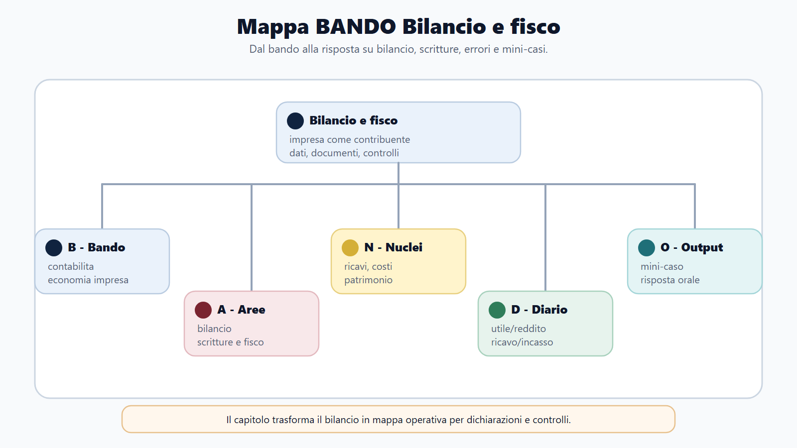
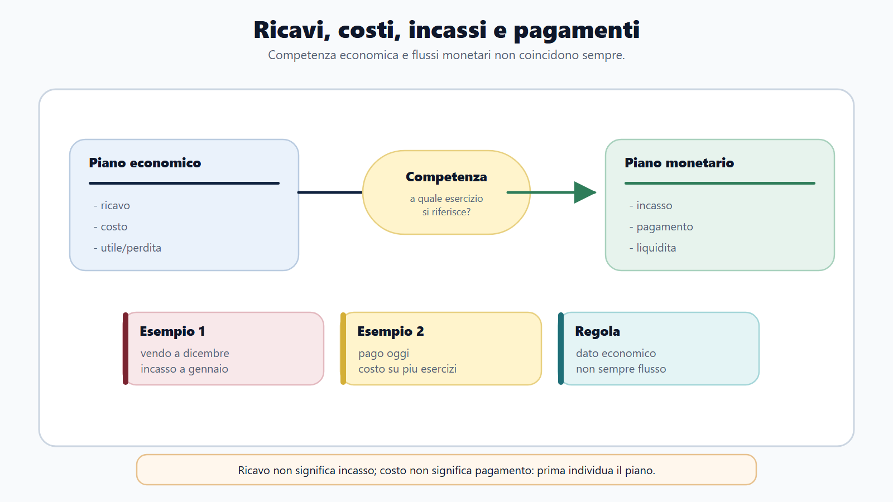
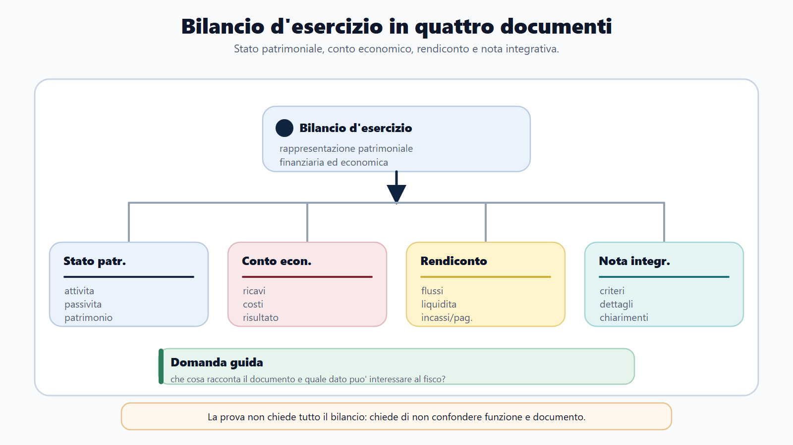
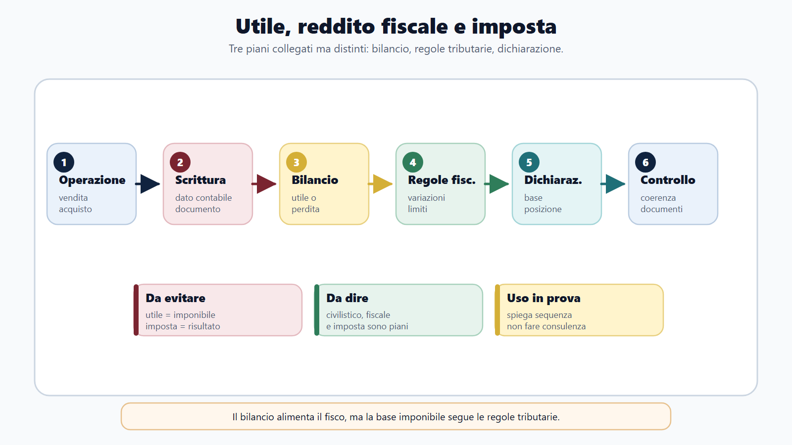

VOL-03 · Capitolo 28
M-FC02
Contabilità aziendale
ed economia d’impresa per il fisco
Un’impresa può chiudere l’esercizio in utile e avere poca liquidità. Un incasso non genera sempre un ricavo; costo e pagamento possono cadere in momenti diversi. La distinzione tra patrimonio, reddito e flussi finanziari spiega questi risultati.
01 · Il problema in prova
Leggere l’impresa, non fare il commercialista
Per il funzionario fiscale la contabilità è il linguaggio con cui l’impresa rappresenta acquisti, vendite, crediti, debiti, investimenti e finanziamenti. Un margine insolito può orientare il controllo; da solo non dimostra un’evasione. La contabilità aziendale non coincide con la contabilità pubblica del VOL-01.
Che cos’è
L’impresa è l’attività economica organizzata; l’azienda è il complesso dei beni organizzati per il suo esercizio. La contabilità generale rileva i fatti esterni e, tramite assestamento, attribuisce all’esercizio gli effetti economici interni rilevanti.
A che serve in prova
A distinguere aspetto economico, patrimoniale e finanziario; a separare ricavo e incasso; a leggere i prospetti di bilancio; a spiegare il passaggio dall’utile civilistico al reddito imponibile senza conclusioni automatiche.
Utile, patrimonio e liquidità misurano fenomeni distinti.
Un finanziamento bancario aumenta liquidità e debiti, ma non genera un ricavo. L’acquisto di un macchinario riduce cassa o crea un debito e aumenta le immobilizzazioni; il costo economico viene poi distribuito mediante ammortamento.
02 · BANDO
Cinque decisioni su questo capitolo
| Che cosa fai | Se la salti | |
|---|---|---|
| B — Bando | Cerca contabilità aziendale, economia d’impresa, bilancio, ragioneria, analisi finanziaria, reddito d’impresa. | Studi un corso di ragioneria scollegato dal fisco. |
| A — Aree | Collega diritto commerciale, principi OIC, IVA, imposte sui redditi, accertamento, crisi. | Tratti il bilancio come dichiarazione. |
| N — Nuclei | Partita doppia, competenza, assestamento, patrimonio netto, utile, liquidità, variazioni fiscali. | Confondi costo e pagamento, utile e cassa. |
| D — Diario | Registra le coppie: ricavo/incasso, bilancio/imponibile, indice/prova. | Usi un indice come accusa. |
| O — Output | Cinque operazioni, mini-bilancio, anomalia fiscale senza automatismi. | Elenco di conti senza lettura. |
03 · Mappa
Dal bando al ponte fiscale
Chi studia i conti senza competenza perde il reddito. Chi studia l’imponibile senza bilancio resta cieco sui dati di partenza.

Scritture, documenti di bilancio, errori tipici e mini-casi: il fisco legge l’impresa, non la sostituisce.
04 · Partita doppia
Ogni operazione in almeno due conti
Totale Dare uguale a totale Avere. Per i conti finanziari, un aumento di denaro o crediti si registra di regola in Dare; un aumento di debiti in Avere. Costi in Dare, ricavi in Avere. Il patrimonio netto aumenta normalmente in Avere. Gli esempi isolano la logica: in pratica IVA, ritenute e documenti seguono la disciplina applicabile.
| Operazione semplificata | Dare | Avere |
|---|---|---|
| Conferimento iniziale in banca | Banca | Capitale sociale |
| Acquisto di merci a credito | Merci c/acquisti | Debiti verso fornitori |
| Vendita a credito | Crediti verso clienti | Ricavi di vendita |
| Incasso del cliente | Banca | Crediti verso clienti |
| Pagamento del fornitore | Debiti verso fornitori | Banca |
Conferimento 20.000, acquisto 6.000, vendita 9.000. Il conferimento non è ricavo. Quando il cliente paga 9.000 si addebita Banca e si accredita Crediti: cambia la composizione finanziaria, non nasce un secondo ricavo.
05 · Competenza
Ricavo non è incasso, costo non è pagamento
Il ricavo misura il valore della produzione venduta secondo competenza. L’incasso è l’entrata finanziaria. Una vendita a credito genera subito ricavo e credito; l’incasso successivo trasforma il credito in banca. Nei controlli, confrontare soltanto fatture e movimenti bancari può generare falsi scostamenti.
Ratei: quote future già maturate. Risconti: quote già rilevate ma di esercizi successivi. Fatture da emettere o ricevere. Ammortamento, rimanenze, svalutazioni e fondi secondo prudenza e principi contabili. Un premio assicurativo pagato anticipatamente può essere in parte rinviato.
Competenza economica e flussi monetari non coincidono sempre.

06 · Bilancio
Quattro documenti, una rappresentazione
L’art. 2423 c.c. richiede una rappresentazione chiara, veritiera e corretta. «Veritiera» non significa precisione assoluta: molte poste dipendono da stime ragionevoli. Continuità, prudenza, sostanza economica, costanza, rilevanza e comparabilità. I principi OIC supportano l’applicazione, coerenti con codice civile e norme speciali.

Stato patrimoniale, conto economico, rendiconto finanziario, nota integrativa. La relazione sulla gestione, quando richiesta, accompagna il bilancio ma non ne è uno dei prospetti costitutivi.
07 · Prospetti
Patrimonio, reddito, cassa
Lo stato patrimoniale fotografa impieghi e fonti alla chiusura. Il conto economico, organizzato per natura, conduce al risultato. Il rendiconto spiega le variazioni delle disponibilità distinguendo attività operativa, investimento e finanziamento. Un’impresa redditizia può assorbire cassa se aumentano crediti e rimanenze.
| Lettura | Che cosa può significare | Limite |
|---|---|---|
| Aumento dei crediti commerciali | Crescita delle vendite oppure difficoltà di incasso. | Il dato apre una verifica, non la chiude. |
| Rimanenze elevate | Sostegno a vendite future oppure obsolescenza. | Quantità, criteri di costo e svalutazioni incidono sul risultato. |
| Flusso operativo | Capacità della gestione di produrre risorse monetarie. | Non sostituisce l’analisi delle singole operazioni. |
| Fondo rischi | Passività di natura determinata, incerte in importo o data. | Un fondo generico per ridurre l’utile non rispetta i requisiti. |
08 · Indici
Un indice anomalo non è una prova
Gli indici acquistano significato rispetto a settore, dimensione e andamento nel tempo. Lo schema utilizzato va dichiarato: sigle come EBITDA o MOL possono corrispondere a calcoli differenti. Dati didattici: current ratio 1,50; leverage 2,50; ROS 10%.
| Indicatore | Formula essenziale | Lettura |
|---|---|---|
| Current ratio | Attivo corrente / Passivo corrente | Copertura dei debiti a breve |
| Leverage | Totale fonti / Patrimonio netto | Intensità dell’indebitamento |
| ROS | Risultato operativo / Ricavi | Margine operativo sulle vendite |
| ROE | Utile / Patrimonio netto medio | Redditività del capitale proprio |
| Rotazione magazzino | Costo del venduto / Rimanenze medie | Velocità di rinnovo delle scorte |
Considerare un indice come prova. Servono a selezionare e interpretare; la conclusione fiscale richiede documenti, confronto e motivazione. Equilibrio economico, finanziario e patrimoniale restano tre piani. Crisi e insolvenza non coincidono con una singola perdita.
09 · Ponte fiscale
Dall’utile al reddito imponibile
Il risultato civilistico risponde alle regole di bilancio; il reddito imponibile alle norme tributarie. Per i soggetti interessati si parte dall’utile o dalla perdita del conto economico, corretto con variazioni in aumento e in diminuzione previste dal TUIR. Le differenze possono essere permanenti o temporanee.
| Passaggio | Importo didattico |
|---|---|
| Utile civilistico | 100.000 |
| Variazione in aumento | + 12.000 |
| Variazione in diminuzione | − 5.000 |
| Reddito imponibile didattico | 107.000 |
I 107.000 sono l’imponibile, non l’imposta. Aliquota, periodo e soggetto restano da verificare.

10 · Controllo fiscale
Il segnale non sostituisce l’istruttoria
Il controllo confronta bilancio, dichiarazione, comunicazioni IVA, fatture, corrispettivi, versamenti e dati finanziari legittimamente acquisiti. Una differenza può dipendere da una nota di credito, da un’operazione fuori campo, dalla cessione di un bene strumentale, da un errore temporale o da una reale omissione.
| Profilo | Uso prevalente del dato contabile | Limite |
|---|---|---|
| AE / ACFI | Bilancio, dichiarazioni, riconciliazioni, rischio e audit fiscale. | Il segnale non sostituisce istruttoria e motivazione. |
| AdER | Debiti, pagamenti, documentazione e situazione del debitore. | La lettura contabile non sostituisce procedure e competenze. |
| ADM | Fatture, merci, valore, costi e ricavi degli operatori. | Il dato aziendale va letto con la disciplina doganale o di settore. |
11 · Caso guidato
Utile senza cassa
Al 31 dicembre Alfa Srl presenta un utile di 80.000 euro ma il conto bancario è quasi esaurito. L’ufficio non può concludere che l’utile sia fittizio.
| Ipotesi | Ragionamento |
|---|---|
| Crediti | Le vendite di dicembre hanno generato ricavi e crediti non ancora incassati. |
| Magazzino | Scorte pagate in anticipo; la parte invenduta resta nell’attivo e non è interamente costo dell’esercizio. |
| Investimenti | Un macchinario è stato pagato; il costo economico entra gradualmente tramite ammortamento. |
| Debiti | Il rimborso di un finanziamento riduce il debito, non l’utile salvo interessi. |
| Verifica | Si riconciliano ricavi, fatture, crediti, incassi e dichiarazioni. Solo scostamenti non spiegati giustificano approfondimenti. |
12 · Verifica
Due domande da saper spiegare
Perché l’utile di bilancio può differire dal reddito imponibile?
Finalità civilistica e fiscale diverse; derivazione dal conto economico; variazioni in aumento e diminuzione; differenze permanenti e temporanee; imposte correnti, anticipate e differite. Il bilancio registra l’imposta di competenza; la dichiarazione determina quanto dovuto nel periodo.
Il cliente paga una fattura dell’anno precedente: è un nuovo ricavo?
No. Il ricavo era stato rilevato per competenza con la vendita; l’incasso estingue il credito e aumenta la banca. Occorre comunque verificare il regime contabile e fiscale applicabile al soggetto.
13 · Mini-esercizio
Classifica le operazioni
| Operazione | Effetto |
|---|---|
| Vendita a credito per 10.000 euro | Aumento crediti e ricavi. |
| Incasso di un credito precedente | Aumento banca e diminuzione crediti, senza nuovo ricavo. |
| Acquisto e pagamento di un macchinario | Aumento immobilizzazioni e diminuzione banca, non costo immediato integrale. |
| Quota annuale di ammortamento | Costo di competenza e fondo ammortamento. |
| Costo contabilizzato ma fiscalmente indeducibile | Costo civilistico con variazione fiscale in aumento. |
14 · Anti-confusione
Sette coppie da non scambiare
| Coppia | Differenza essenziale |
|---|---|
| Contabilità aziendale / pubblica | Impresa, patrimonio e reddito da un lato; risorse e cicli finanziari pubblici dall’altro. |
| Ricavo / incasso | Componente economico e movimento finanziario. |
| Costo / pagamento | Componente economico e uscita finanziaria. |
| Utile / liquidità | Risultato economico e disponibilità monetarie. |
| Bilancio / dichiarazione | Rappresentazione civilistico-contabile e adempimento fiscale. |
| Reddito imponibile / imposta | Base di calcolo e tributo risultante. |
| Indice / prova | Segnale interpretativo e dimostrazione fondata su elementi verificati. |
15 · Da tenere ferme
Cinque regole, con il perché
1. La partita doppia mantiene uguaglianza tra Dare e Avere.
2. Ricavo e incasso, costo e pagamento appartengono a momenti diversi.
3. L’assestamento applica la competenza mediante ammortamenti, rimanenze, ratei, risconti e fondi.
4. Utile, patrimonio e liquidità misurano fenomeni distinti.
5. Il reddito imponibile deriva dal risultato contabile corretto dalle regole fiscali.
16 · Patrimonio
Attività, passività, netto
Il patrimonio è l’insieme coordinato di attività, passività e patrimonio netto in un determinato momento. Il reddito d’esercizio è la variazione economica prodotta dalla gestione nel periodo. Un utile incrementa, salvo distribuzioni e altre operazioni, il patrimonio netto; una perdita lo riduce. Il capitale circolante netto e il margine di struttura offrono una prima misura dell’equilibrio, nella configurazione adottata.
Economico
Ricavi e costi di competenza, utile o perdita.
Patrimoniale
Impieghi e fonti alla data di chiusura.
Finanziario
Crediti, debiti, denaro, flussi.
Prossimo capitolo
Civile e commerciale applicati a fisco, dogane e riscossione
Il bilancio è il linguaggio. Il capitolo successivo fornisce il lessico giuridico dell’operazione: soggetto, obbligazione, contratto, garanzia, impresa e società. Prima l’effetto fiscale si qualifica il rapporto.